技術・知識
エアレに役立ちそうなものを集めました。
より詳しい説明は、wikiの
「基礎編open_in_new」などをご覧ください。
技術
スライド
星の子が滑りながら移動してる状態のことをスライドと言います。
スライド状態から飛び立つと、通常の飛行と比較して速度と上昇力の二点が向上します。
スライド状態で上昇したとき↓
普通の上昇↓
スライド状態からの飛行はエアレースにおいてはほぼ必須条件となります。
オーソドックスなスライドの入れ方は以下の二点を抑えておきましょう。
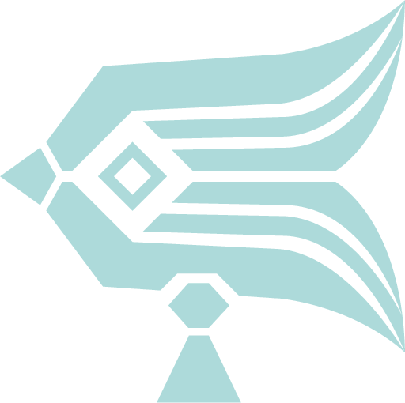パワースライド
スライド状態に移行する方法の一つです。
継続した前移動
ジャンプ入力
着地のタイミングに合わせて再びジャンプ入力
1. での前移動は常時継続していないとスライドが失敗してしまいます。
ピボット滑走
スライド状態に移行する方法のもう一つです。
星の子を長押し
大鳴きが始まる前に、指を星の子の外にスワイプする。(この際指は離さない)
画面左側をフリック
1. の手を離す
前移動
パワースライドと異なり、狭い足場からでもスライド状態に移行できる利点があります。
この他にも、ぴっちょむスターゲート、着地スライド(スリップスライド)といったスライド方法が存在します。→wiki基礎編open_in_new
滑り降り
星の子が加速する方法です。
スタート時はもちろん、コースの途中で滑り降りを挟むことでタイム短縮に繋げられます。
スライド状態で地面から滑り降りる
羽ばたかずグライドモードに切り替える
飛行切り替えのアイコンが表示されるまでは通常より時間がかかります。
アイコンの表示まで羽ばたかないことで失敗を防げます。
ぴたとま
ゴールのタイムロスをなくすために、着地と同時に静止するテクニックです。
星の子の姿勢を下向きにする
ホバー切り替え
移動操作を後ろフリック
ゴールに向かって下降するコースで特に有効です。
補正ジャンプ
前述のぴたとまと合わせて覚えておきたいゴールのテクニックです。
着地したい足場の前でホバーモードに切り替える
足場に対してフリック
ゴールに向かって上昇するコースで特に有効です。
クイックターン
(派生：180度ターン)
急な方向転換を可能にするテクニックです。
飛行モードをホバーに切り替える
進みたい方向に画面左側を2回フリック
飛行モードをグライドに戻す
クイックターンを使えば90度や180度といった曲がりづらい角度でもタイムロスを抑えて飛ぶことができます。
上向飛行
画面左側を上フリックをしながら飛ぶと、通常より高く飛ぶことができます。
上スワイプよりも更に高度が出せるため、習得しているとタイム短縮に繋がります。
水平飛行
スライド状態では上昇力が高まっているため、通常の操作では水平ではなく上向きに飛んでしまいます。
画面左側を軽く下スワイプすることで高度を抑え、水平に飛ぶことができます。
垂直飛行
ホバーよりも更に速く真上に飛ぶテクニックです。
スライド状態を作る
前移動をする
羽ばたく
後ろ移動をする
飛行モードをグライドに切り替える
操作難度が高いだけでなくエアレにおける使用場面は限定的ですが、No.7のチェックポイント2から3でのルートなどで使用するとタイムの短縮に繋がります。
フリック減速
(ちょんちょん減速/左手ちょんちょん)
グライド状態で画面左側をフリックすると減速します。
速度を維持したいときには画面左側を触らないことがポイントです。
他方で、フリックをすることで意図的に減速し、オーバーランを防ぐといった飛び方もできます。
知識
スライドの維持
スライドが切れる主な要因は二つです。
接地をして星の子が歩く
空中での補正ジャンプの発生
他方で、以下の場合にはスライドを維持することができます。
飛行モード切り替え
壁への衝突
エモートタップ
風壁に煽られる
接地状態のジャンプ
接地状態での補正ジャンプの発生
光の生き物に乗る
ホーム帰還ボタンタップ
エリアチェンジ
スライド切れ状態
(前傾姿勢/MAEZAWA)
接地時間が短時間の場合、星の子が滑る挙動をしていてもスライド切れ状態になることがあります。
スライド切れ状態化を判断する方法は三つです。
飛行モード切り替えアイコンの表示が速い
星の子が前傾姿勢になる
下降スピードが遅くなる
逆に
飛行モード切替アイコンの表示が遅い
真っすぐな姿勢
下降スピードが速い
といった場合、スライド状態が維持されてると言えます。
滑り降りの挙動をしていれば、スライド状態が維持されていると判断できます。
接地時にスライド切れ状態を起こしやすくなる要因もあります。
星の子の身長が低い(初期身長以下)
fps設定(後述)が高い
グライド状態での接地
スライド切れ状態にするメリットがある場合は、意図的に上記の方法で接地してみましょう。
パフォーマンス設定
(fps)
画面右上の歯車アイコンからパフォーマンス(画質)の設定ができます。
fpsという数値が高くなるほど
足場の接地難度が低くなる
気流への抵抗力が高くなる
ホバー状態での方向転換難度が低くなる
といったメリットがあります。
他方で
接地時のスライド状態が切れやすくなる
ホバー状態での上昇量と上昇速度が小さくなる
といったデメリットもあります。
風壁加速
エリアの外側にある風の壁に触れることで加速をするテクニックです。
基本的には、風壁に触れてから離れることで風壁加速を使えます。
風壁は目に見えないだけでなく凹凸のある形をしていることに留意が必要です。
エアレ開催時はドリフトとの合わせ技でより加速できました。
身長
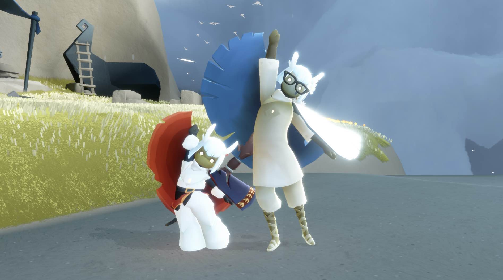身長に関わらず、飛行性能は同じです。
身長が低いほうが速く軽やかに見えるのは、視界の広さが影響していると考えられます。
また、身長に応じて当たり判定は変化します。
そのため、壁にぶつかりづらい低身長の方が基本的には有利に飛ぶことができます。
さらに、身長が低いと接地時にスライド切れが起こりやすくなります。
スライドを維持して飛びたい場合においては、高身長の方が有利と言えます。
下向き羽ばたき減速
スライドが入った状態で、水平より下に向かって羽ばたくと減速します。
エアレ独自用語集
ホールインワン
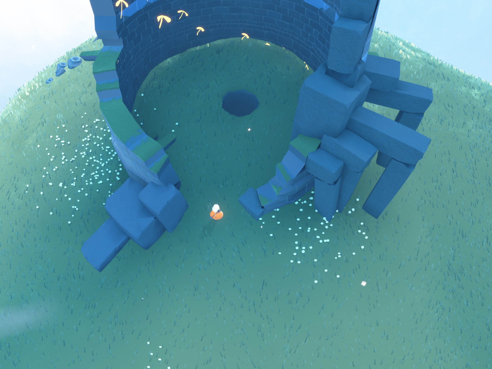No.2の最終チェックポイントとなる、小さい穴を抜けることをホールインワンと呼称しています。
MAEZAWA
スライド切れの状態で前傾姿勢になることをMAEWZAWAと呼称します。
星の子がフワフワとして無重力状態のようになることから、月に行った某社長の名前を取ってMAEZAWAと名付けられました。
吊り革
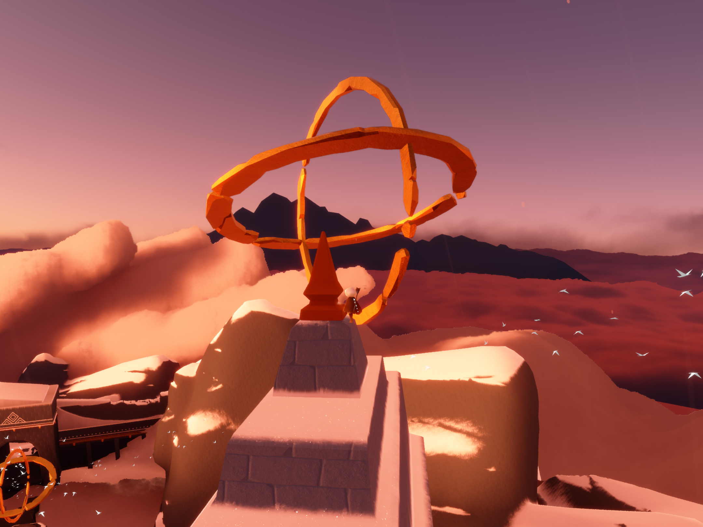天球儀のことを吊り革と呼称します。
私物の吊り革を使い天球儀の動きを解説した人がいたことからそれが定着し、吊り革と呼ばれるようになりました。
横穴
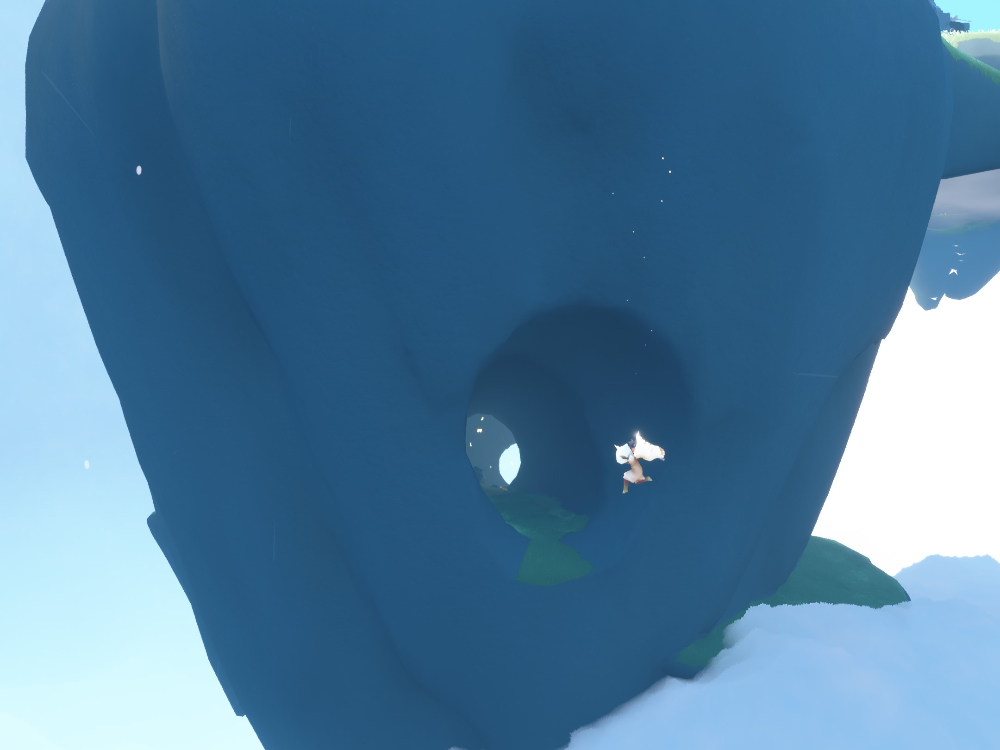鳥の巣エリアを使ったコースのNo.2のチェックポイント2やNo.6のチェックポイント3で通過する穴のことです。
針穴スタート
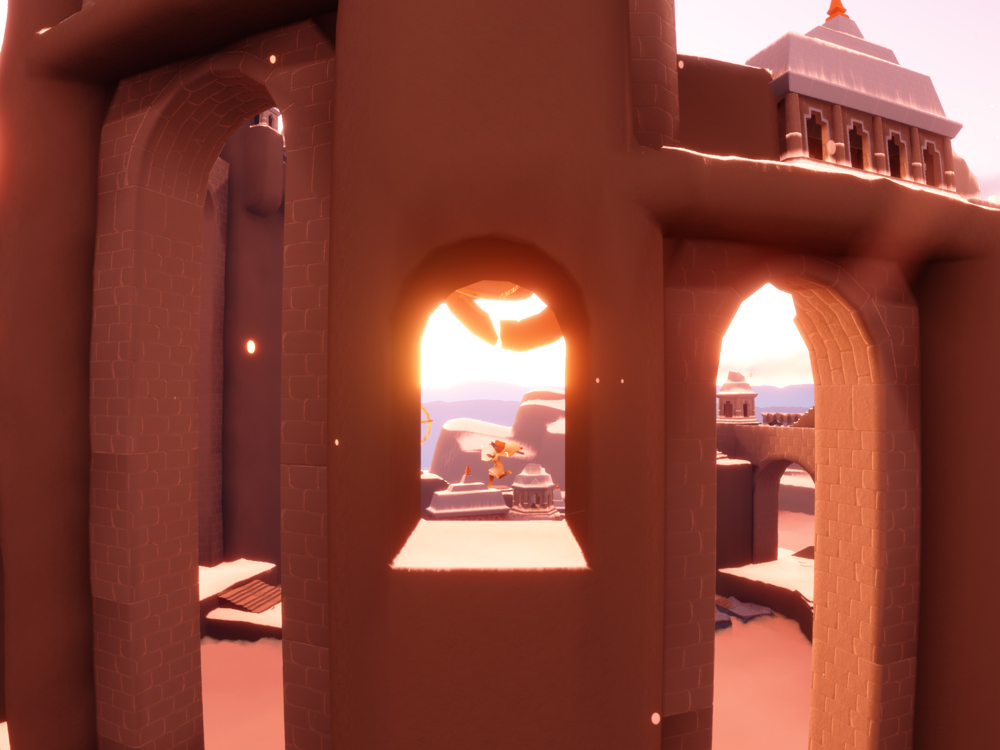No.7のチェックポイント3を針穴スタートと呼ぶことがあります。
「#sky天球儀針穴チャレンジ」というXで投稿する腕試しチャレンジのスタート地点であることが由来です。
牢獄
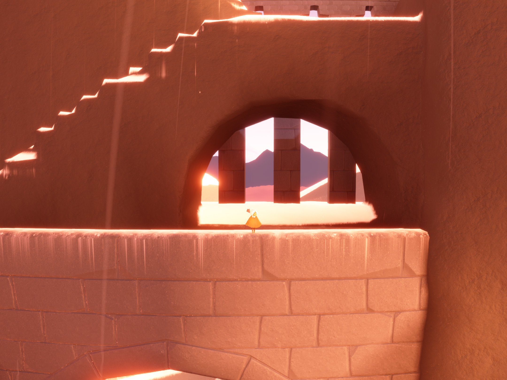No.7のチェックポイント4を牢獄と呼ぶことがあります。連なる柱が檻に見えることが由来です。
スラローム
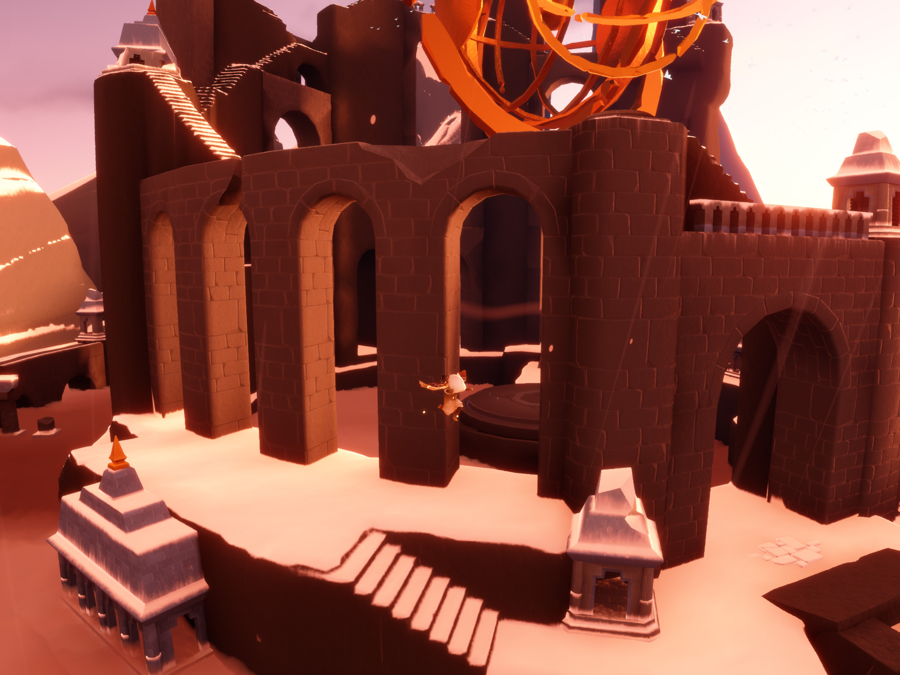No.3のチェックポイント4をスラロームと呼称します。
タイムを競うスキーやモータースポーツでジグザグとする動きが語源です。
東屋
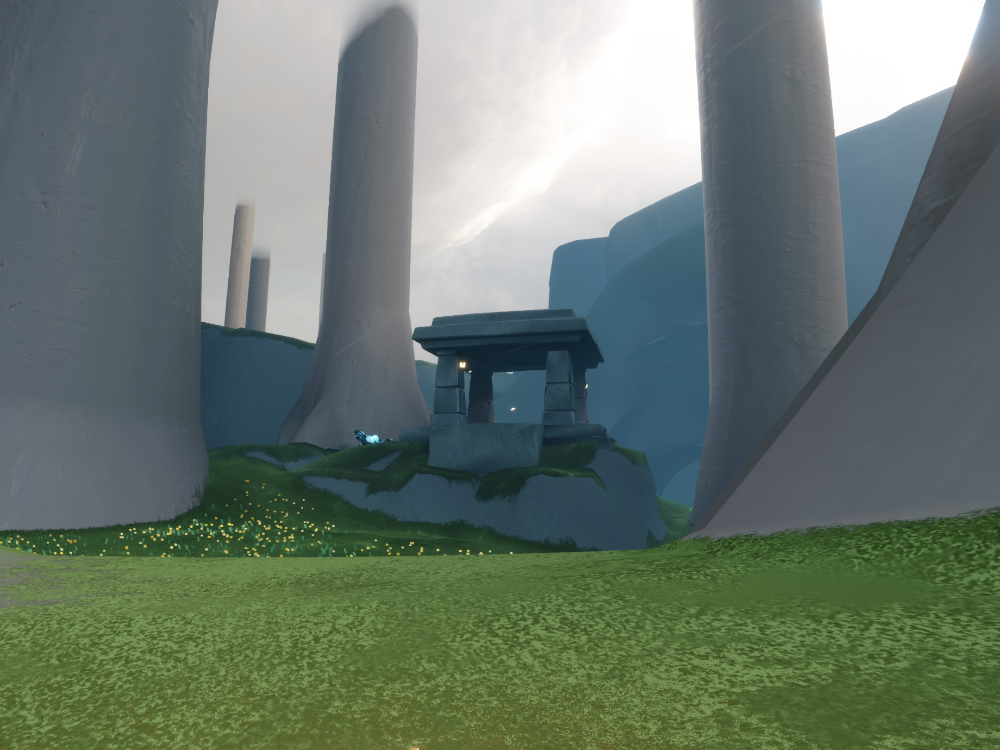No.5のコースで通過する建物のことを東屋と呼称します。
壁がなく柱と屋根で造られている建物のことを東屋と呼ぶことが由来です。
羽管理
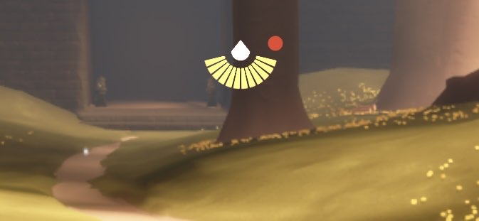ここでの「羽」とは画面中央上部にあるエナジーを指します。
エナジーを消費して羽ばたくと加速できますが、むやみに羽ばたくとコース途中で羽が足りなくなりスピードが落ちてしまいます。
コースを飛ぶ上では効果的なタイミング・回数でエナジーを消費する必要があり、その羽の配分を羽管理と呼びます。
雑学
非情なちょうちょ
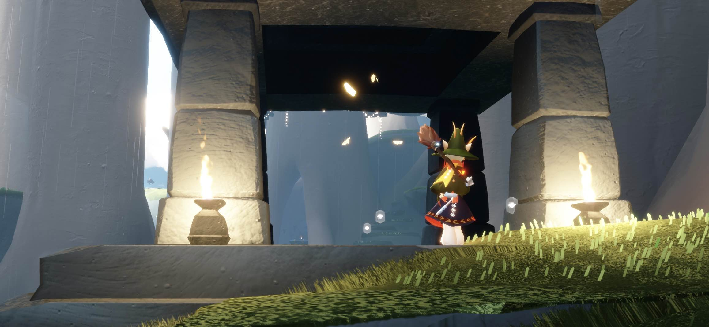 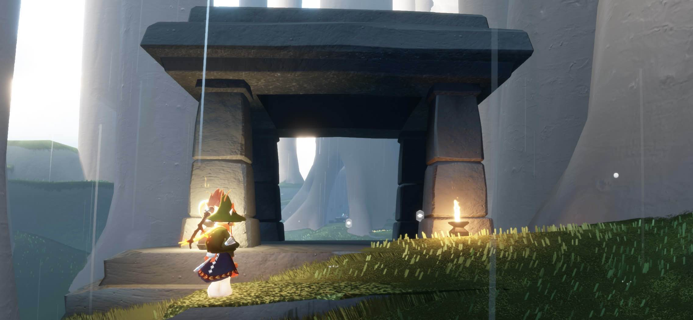ちょうちょは、大人数で練習しているといなくなります。
エナジーの回復をちょうちょに頼るのは避けましょう。
乗れないマンタ
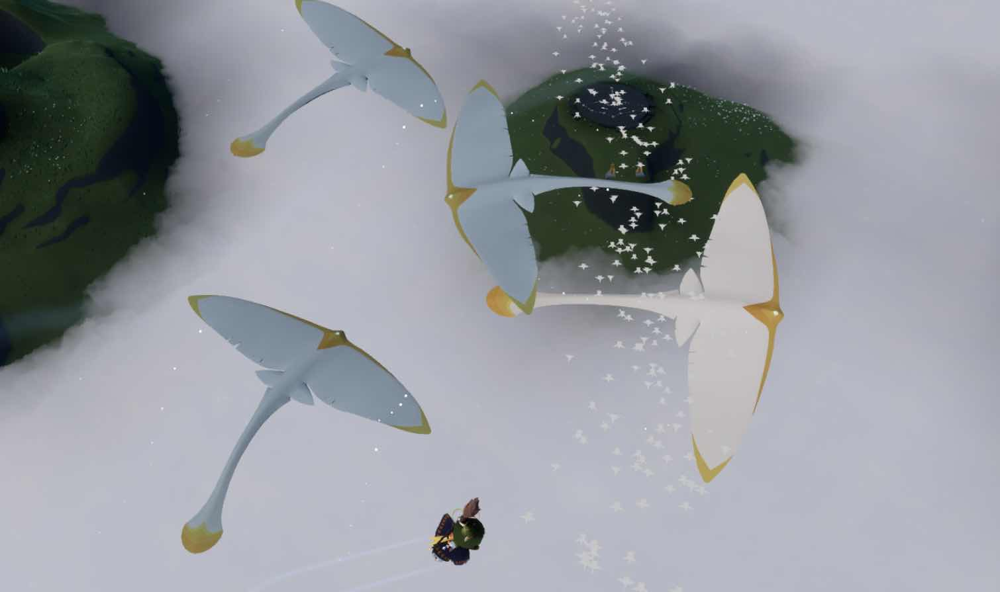草原村エリアにはたまに4匹目のマンタが出現します。
彼には乗ることができないため、マンタを使ったコース取りを考えている場合はよく確認しましょう。
見分け方として、乗れる3匹に比べて色が白いです。
様々な回復方法
発着地点でのエナジー回復には様々な方法があります。
近くの雲を触る
白キャンを持つ
大鳴きする
フレエモを行う
松明やトーチなどの回復アイテムの利用
シェアスペなどのプレイヤー創作物の利用
なお、とらのこエアレコースは基本的に発着地点の付近に雲があり、回復は容易です。
白キャンドルや松明などのアイテムを使用した回復がルールに抵触することはありませんが、アイテムがゴール時に干渉しないよう留意が必要です。（松明に当たって着地するなど）
過去の遺物
過去の仕様ではドリフトと呼ばれるテクニックがありました。
パフォーマンス優先モード(60fps)に設定することで、滑り降り後に空中での方向転換が容易にできていました。
現行の仕様では接地後の空中での自由度が低いことに留意が必要です。
気軽なスタート方式
公式大会以外でレースをする場合、大鳴き3回の後にスタートするケースが多いです。
大鳴きをしてもピボット状態からのスライド準備は継続されます。
配慮
・チャットのタイミング
フレンドが飛行中は、誤タップを防ぐため、チャットは控えめにするか邪魔にならないところに移動しましょう。
・野良の手伝い
晴れ間でのパン焼きや、複数人必要な扉などはできるだけ協力しましょう。